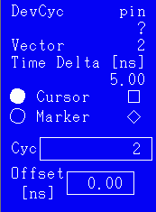

Jumping to a Particular Cycle Number
To move the display directly to a particular cycle number:
- Activate the cursor by clicking the radio button beside the word ‘Cursor'.
- Type in the cycle number that you want to jump to in the field Cyc.

The Display jumps to the cycle number that you have entered.
When you click the pin name column, a device cycle name is displayed for the selected pin and the cycle number. If a group is selected then the device cycle of the first pin and a question mark is shown, for example: PULSE?.
Functional changes
- Introduced before SmarTest 6.3.2